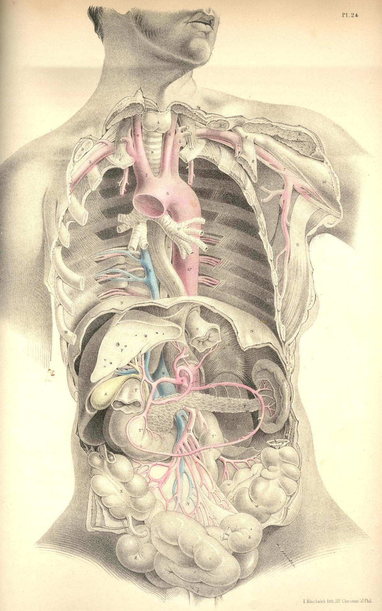

SURGICAL ANATOMY by JOSEPH MACLISE
COMMENTARY ON PLATE 24.
THE RELATIONS OF THE PRINCIPAL BLOODVESSELS
TO THE VISCERA OF THE THORACICO-ABDOMINAL CAVITY.
The median line of the body is occupied by the centres of the four great
systems of organs which serve in the processes of circulation,
respiration, innervation, and nutrition. These organs being fashioned in
accordance with the law of symmetry, we find them arranged in close
connexion with the vertebrate centre of the osseous fabric, which is
itself symmetrical. In this symmetrical arrangement of the main organs
of the trunk of the body, a mechanical principle is prominently
apparent; for as the centre is the least moveable and most protected
region of the form, so have these vitally important structures the full
benefit of this situation. The aortal trunk, G, of the arterial system
is disposed along the median line, as well for its own safety as for the
fitting distribution of those branches which spring symmetrically from
either side of it to supply the lateral regions of the body.
The visceral system of bloodvessels is moulded upon the organs which
they supply. As the thoracic viscera differ in form and functional
character from those of the abdomen, so we find that the arterial
branches which are supplied by the aorta to each set, differ likewise in
some degree. In the accompanying figure, which represents the thoracic
and abdominal visceral branches of the aorta taken in their entirety,
this difference in their arrangement may be readily recognised. In the
thorax, compared with the abdomen, we find that not only do the aortic
branches differ in form according to the variety of those organs
contained in either region, but that they differ numerically according
to the number of organs situated in each. The main vessel itself,
however, is common to both regions. It is the one thoracico-abdominal
vessel, and this circumstance calls for the comparison, not only of the
several parts of the great vessel itself, but of all the branches which
spring from it, and of the various organs which lie in its vicinity in
the thorax and abdomen, and hence we are invited to the study of these
regions themselves connectedly.
In the thorax, the aorta, G G*, is wholly concealed by the lungs in
their states both of inspiration and expiration. The first part of the
aortic arch, as it springs from the left ventricle of the heart, is the
most superficial, being almost immediately sub-sternal, and on a level
with the sternal junctions of the fourth ribs. By applying the ear at
this locality, the play of the aortic valves may be distinctly heard.
From this point the aorta, G, rises and arches from before, backwards,
to the left side of the spine, G*. The arch of the vessel lies more
deeply between the two lungs than does its ventricular origin. The
descending thoracic aorta lies still more deeply situated at the left
side of the dorsal spine. At this latter situation it is in immediate
contact with the posterior thick part of the left lung; whilst on its
right are placed, L, the thoracic duct; I, the oesophagus; K, the vena
azygos, and the vertebral column. In Plate 26 may be seen the relation
which the superior vena cava, H, bears to the aortic arch, A.
In the span of the aortic arch will be found, H*, the left bronchus,
together with the right branch of the pulmonary artery, and the right
pulmonary veins. The pneumo-gastric and phrenic nerves descend on either
side of the arch. The left pneumo-gastric nerve winds round beneath the
arch at the point where the obliterated ductus arteriosus joins it. See
Plates 12 & 26.
The pulmonary artery, B, Plates 1 & 2, lies close upon the fore
part,
and conceals the origin, of the systemic aorta. Whenever, therefore, the
semilunar valves of either the pulmonary artery or the systemic aorta
become diseased, it must be extremely difficult to distinguish by the
sounds alone, during life, in which of the two the derangement exists.
The origins of both vessels being at the fore part of the chest, it is
in this situation, of course, that the state of their valves is to be
examined. The descending part of the thoracic aorta, G*, being at the
posterior part of the chest, and lying on the vertebral ends of the left
thoracic ribs, will therefore require that we should examine its
condition in the living body at the dorsal aspect of the thorax. As the
arch of the aorta is directed from before backwards--that is, from the
sternum to the spine, it follows that when an aneurism implicates this
region of the vessel, the exact situation of the tumour must be
determined by antero-posterior examination; and we should recollect,
that though on the fore part of the chest the cartilages of the second
ribs, where these join the sternum, mark the level of the aortic arch,
on the back of the chest its level is to be taken from the vertebral
ends of the third or fourth ribs. This difference is caused by the
oblique descent of the ribs from the spine to the sternum. The first and
second dorsal vertebrae, with which the first and second ribs
articulate, are considerably above the level of the first and second
pieces of the sternum.
In a practical point of view, the pulmonary artery possesses but small
interest for us; and in truth the trunk of the systemic aorta itself may
be regarded in the same disheartening consideration, forasmuch as when
serious disease attacks either vessel, the "tree of life" may be said to
be lopped at its root.
When an aneurism arises from the aortic arch it implicates those
important organs which are gathered together in contact with itself. The
aneurismal tumour may press upon and obstruct the bronchi, H H*; the
thoracic duct, L; the oesophagus, I; the superior vena cava, H, Plate
26, or wholly obliterate either of the vagi nerves. The aneurism of the
arch of the aorta may cause suffocation in two ways--viz., either by
pressing directly on the tracheal tube, or by compressing and irritating
the vagus nerve, whose recurrent branch will convey the stimulus to the
laryngeal muscles, and cause spasmodic closure of the glottis. This
anatomical fact also fully accounts for the constant cough which attends
some forms of aortic aneurism. The pulmonary arteries and veins are also
liable to obstruction from the tumour. This will occur the more
certainly if the aneurism spring from the right or the inferior side of
the arch, and if the tumour should not break at an early period, slow
absorption, caused by pressure of the tumour, may destroy even the
vertebral column, and endanger the spinal nervous centre. If the tumour
spring from the left side or the fore part of the arch, it may in time
force a passage through the anterior wall of the thorax.
The principal branches of the thoracic aorta spring from the upper part
of its arch. The innominate artery, 2, is the first to arise from it;
the left common carotid, 6, and the left subclavian artery, 5, spring in
succession. These vessels being destined for the head and upper limbs,
we find that the remaining branches of the thoracic aorta are
comparatively diminutive, and of little surgical interest. The
intercostal arteries occasionally, when wounded, call for the aid of the
surgeon; these arteries, like all other branches of the aorta, are
largest at their origin. Where these vessels spring from G, the
descending thoracic aorta, they present considerable caliber; but at
this inaccessible situation, they seldom or never call for surgical
interference. As the intercostal arteries pass outwards, traversing the
intercostal spaces with their accompanying nerves, they diminish in
size. Each vessel divides at a distance of about two inches, more or
less, from the spine; and the upper larger branch lies under cover of
the inferior border of the adjacent rib. When it is required to perform
the operation of paracentesis thoracis, this distribution of the vessel
should be borne in mind; and also, that the farther from the spine this
operation is performed, the less in size will the vessels be found. The
intercostal artery is sometimes wounded by the fractured end of the rib,
in which case, if the pleura be lacerated, an effusion of blood takes
place within the thorax, compresses the lung, and obstructs respiration.
The thoracic aorta descends along the left side of the spine, as far as
the last dorsal vertebra, at which situation the pillars of the
diaphragm overarch the vessel. From this place the aorta passes
obliquely in front of the five lumbar vertebrae, and on arriving
opposite the fourth, it divides into the two common iliac branches. The
aorta, for an extent included between these latter boundaries, is named
the abdominal aorta, and from its fore part arise those branches, which
supply the viscera of the abdomen.
The branches which spring from the abdominal aorta to supply the viscera
of this region, are considerable, both as to their number and size. They
are, however, of comparatively little interest in practice. To the
anatomist they present many peculiarities of distribution and form
worthy of notice, as, for example, their frequent anastomosis, their
looping arrangement, and their large size and number compared with the
actual bulk of the organs which they supply. As to this latter
peculiarity, we interpret it according to the fact that here the vessels
serve other purposes in the economy besides that of the support and
repair of structure. The vessels are large in proportion to the great
quantity of fluid matter secreted from the whole extent of the inner
surface of this glandular apparatus--the gastro-intestinal canal, the
liver, pancreas, and kidneys.
As anatomists, we are enabled, from a knowledge of the relative position
of the various organs and bloodvessels of both the thorax and abdomen,
to account for certain pathological phenomena which, as practitioners,
we possess as yet but little skill to remedy. Thus it would appear most
probable that many cases of anasarca of the lower limbs, and of dropsy
of the belly, are frequently caused by diseased growths of the liver, P,
obstructing the inferior vena cava, R, and vena portae, rather than by
what we are taught to be the "want of balance between secreting and
absorbing surfaces." The like occurrence may obstruct the gall-ducts,
and occasion jaundice. Over-distention of any of those organs situated
beneath the right hypochondrium, will obstruct neighbouring organs and
vessels. Mechanical obstruction is doubtless so frequent a source of
derangement, that we need not on many occasions essay a deeper search
for explaining the mystery of disease.
In the right hypochondriac region there exists a greater variety of
organs than in the left; and disease is also more frequent on the right
side. Affections of the liver will consequently implicate a greater
number of organs than affections of the spleen on the left side, for the
spleen is comparatively isolated from the more important blood vessels
and other organs.
The external surface of the liver, P, lies in contact with the
diaphragm, N, the costal cartilages, M, and the upper and lateral parts
of the abdominal parietes; and when the liver becomes the seat of
abscess, this, according to its situation, will point and burst either
into the thorax above, or through the side between or beneath the false
ribs, M. The hepatic abscess has been known to discharge itself through
the stomach, the duodenum, T, and the transverse colon, facts which are
readily explained on seeing the close relationship which these parts
hold to the under surface of the liver. When the liver is inflamed, we
account for the gastric irritation, either from the inflammation having
extended to the neighbouring stomach, or by this latter organ being
affected by "reflex action." The hepatic cough is caused by the like
phenomena disturbing the diaphragm, N, with which the liver, P, lies in
close contact.
When large biliary concretions form in S, the gallbladder, or in the
hepatic duct, Nature, failing in her efforts to discharge them through
the common bile-duct, into the duodenum, T, sets up inflammation and
ulcerative absorption, by aid of which processes they make a passage for
themselves through some adjacent part of the intestine, either the
duodenum or the transverse colon. In these processes the gall-bladder,
which contains the calculus, becomes soldered by effused lymph to the
neighbouring part of the intestinal tube, into which the stone is to be
discharged, and thus its escape into the peritoneal sac is prevented.
When the hepatic abscess points externally towards M, the like process
isolates the matter from the cavities of the chest and abdomen.
In wounds of any part of the intestine, whether of X, the caecum, W, the
sigmoid flexure of the colon, or Z, the small bowel, if sufficient time
be allowed for Nature to establish the adhesive inflammation, she does
so, and thus fortifies the peritoneal sac against an escape of the
intestinal matter into it by soldering the orifice of the wounded
intestine to the external opening. In this mode is formed the artificial
anus. The surgeon on principle aids Nature in attaining this result.
DESCRIPTION OF PLATE 24.
A. The thyroid body.
B. The trachea.
C C*. The first ribs.
D D*. The clavicles, cut at their middle.
E. Humeral part of the great pectoral muscle, cut.
F. The coracoid process of the scapula.
G. The arch of the aorta. G*. Descending aorta in the thorax.
H. Right bronchus. H*. Left bronchus.
I. Oesophagus.
K. Vena azygos receiving the intercostal veins.
L. Thoracic duct.
M M*. Seventh ribs.
N N. The diaphragm, in section.
O. The cardiac orifice of the stomach.
P. The liver, in section, showing the patent orifices of the hepatic
veins.
Q. The coeliac axis sending off branches to the liver, stomach, and
spleen. The stomach has been removed, to show the looping
anastomosis
of these vessels around the superior and inferior borders
of the stomach.
R. The inferior vena cava about to enter its notch in the posterior
thick part of the liver, to receive the hepatic veins.
S. The gall-bladder, communicating by its duct with the hepatic duct,
which is lying upon the vena portae, and by the side of
the hepatic
artery.
T. The pyloric end of the stomach, joining T*, the duodenum.
U. The spleen.
V V. The pancreas.
W. The sigmoid flexure of the colon.
X. The caput coli.
Y. The mesentery supporting the numerous looping branches of the
superior mesenteric artery.
Z. Some coils of the small intestine.
2. Innominate artery.
3. Right subclavian artery.
4. Right common carotid artery.
5. Left subclavian artery.
6. Left common carotid artery.
7. Left axillary artery.
8. Coracoid attachment of the smaller pectoral muscle.
9. Subscapular muscle.
10. Coracoid head of the biceps muscle.
11. Tendon of the latissimus dorsi muscle.
12. Superior mesenteric artery, with its accompanying vein.
13. Left kidney.

Plate 24
COMMENTARY ON PLATE 25